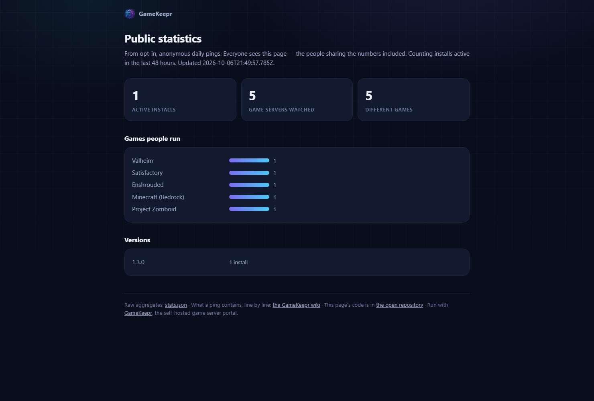
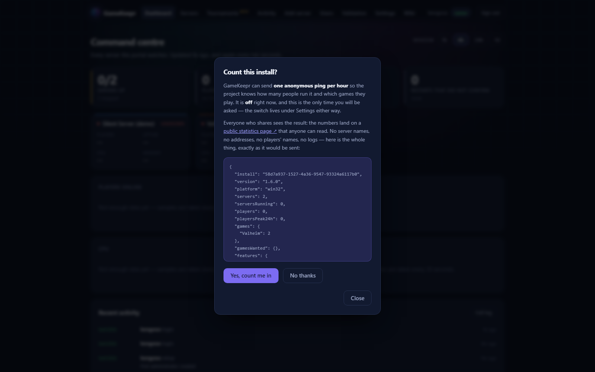

Anonymous usage statistics

Off by default. Nothing is ever sent unless the owner explicitly opts in — an unticked box at setup, and a switch under Settings → Anonymous usage statistics that shows the literal payload before the decision. It is reversible at any moment.
Opted in, GameKeepr sends one ping per hour (daily before 1.6 — the payload did not change, only the freshness of the public page). This is the entire payload, line by line:
| Field | What it is | What it is NOT |
|---|---|---|
install | A random id generated once, so one install is not counted twice | Not derived from your machine, MAC, hostname or anything else |
version | The GameKeepr version | — |
platform | unraid or the OS name | Never a hostname or address |
servers | How many servers the portal watches | Match servers excluded |
serversRunning | How many of them are up at ping time | — |
players | How many people are playing right now, as a number | Never player names — the portal knows them, the ping never carries them |
playersPeak24h | The busiest minute of the last day, summed across your servers | Read from the portal's own metrics; still a count, nothing more |
games | Game names GameKeepr recognises, with a count each ("Valheim": 1) | Never your server names, worlds, passwords, addresses or ports |
gamesWanted | Games you run that the registry does not know yet, named from GameDig's public catalogue of 358 games — the project's wish list for what to support next | A game id is only ever reported when it appears in that public catalogue, so a hand-written type in your servers.json can never leak out; it counts as "Unknown" instead |
features | Seven booleans: tournaments, schedules, validation runs, backups, mods, Discord notifications and a router integration — in use at all | No usage details, no contents, no credentials |
sentAt | The timestamp | — |
Being asked, once

A fresh install answers the question during setup, with the box unticked. A portal that upgraded into this feature never saw that box, so it is invited once — a single dialog, showing the same literal payload, with Yes, count me in and No thanks. Either answer spends the invitation: nobody is asked twice, and the switch under Settings stays available forever.
The deal: share a little, see it all
The receiving side is as open as the sending side. The mothership is a small Cloudflare Worker in the open repository — it never reads your IP address, keeps a raw row only while an install stays active (90 days, then swept; only daily aggregates remain), and feeds the hourly public statistics page at gamekeepr-stats.gamekeepr.workers.dev/stats. Everyone who shares the numbers sees exactly the same numbers the developer does: how many installs are active, which games the community runs, how many people are playing at the daily peak, which platforms host it, which features get used, and how all of that moves over time.
What is deliberately never collected
Errors and logs. Logs carry player names, addresses and file paths — silently harvesting them is where self-hosted tools lose their community's trust. When something breaks, use Reporting an issue instead: a prefilled GitHub issue you read and approve before anything leaves your machine. Consent per report, nothing silent.
A build whose TELEMETRY_ENDPOINT is set empty sends nothing at all, even when opted in — and the Settings card says so instead of pretending.